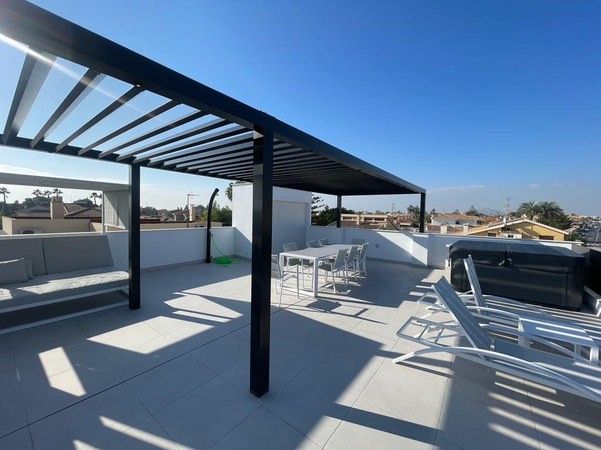
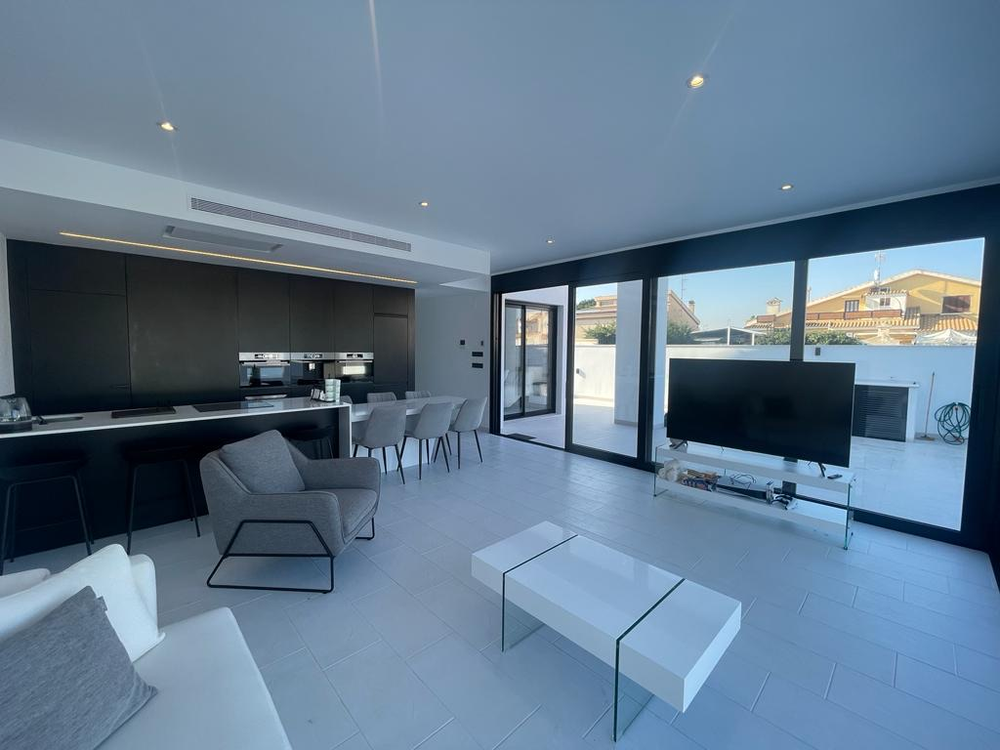
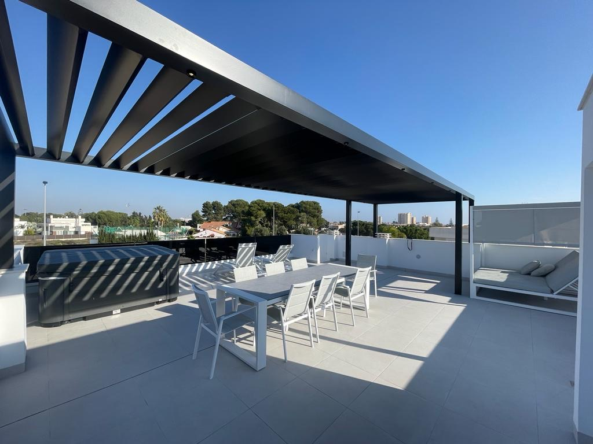
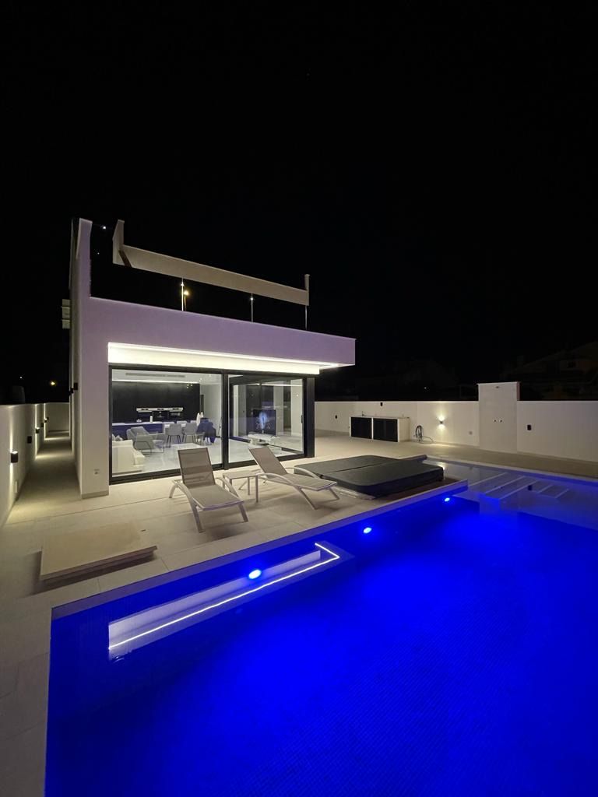
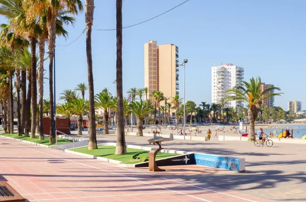

The mild side of a Spanish winter
Between November and March, this is one of the warmest corners of mainland Europe. Dry, bright days; soft evenings; and a villa designed for comfort in every season — not one that waits for summer.

Choose your kind of stay
Come to play, to slow down, or to keep working in the sun. Villa Adela bends to the length and rhythm of your winter.
Tee off in the sun
November – MarchThe region's best courses sit on your doorstep — Roda, La Serena, Los Alcázares and the wider Mar Menor circuit. Base yourself at the villa and play right through the mild season.
- Stays of 7, 14 or 28 nights
- Minutes from multiple Murcia courses
- Room for a group of up to 8 players
- Course guidance on request

Trade winter for warmth
November – FebruarySun without the upkeep of owning. Move in for a month or more and let the villa become your seasonal home on the coast.
- Monthly stays from 28 nights
- Fully furnished, move-in ready
- Heated jacuzzis included · pool heating optional
- Utilities billed transparently

Work where it's warm
October – MarchFor founders, consultants and remote teams who'd rather log in from a sunlit terrace. 600 Mbps fibre, quiet streets, everything in place to stay productive.
- 600 Mbps fibre internet throughout
- Private pool & rooftop terrace
- Quiet residential setting
- Ideal for 1–8 people
Loved by the guests who stay
Recent guest reviews on Booking.com
"Villa Adela is the most fantastic villa — beautiful, modern and more than enough room for the eight of us. The rooftop terrace at sunset is stunning, and the illuminated pool in the evening was a special experience. The owners went above and beyond."
— Hayley · United Kingdom · 10/10 · Booking.com"A wonderful family holiday in a beautiful property. We were a family of eight with more than enough space inside and out, the kitchen has every convenience, and the host was wonderful. Highly recommended."
— Hazel · United Kingdom · 10/10 · Booking.com"The house is spectacular — spacious, inviting and beautifully calm. We loved the warm-water jacuzzis, and the owners are very kind and always attentive. Three fantastic nights."
— M. Ángeles · Spain · 10/10 · Booking.com"We spent wonderful days here. The area is very peaceful, the beach around a kilometre away, and the pool and jacuzzis are stunning — exactly like the photos. We will certainly return."
— Loli · Spain · 10/10 · Booking.com"A beautiful villa with excellent amenities and a very relaxed setting. The hosts are fantastic — they even took us shopping on our first day and brought us wine. They do everything to make your stay perfect."
— Catherine · United Kingdom · 10/10 · Booking.com"Very good communication, and perfect for eight adults. The swimming pool and sunbathing were excellent."
— Gauti · Iceland · 10/10 · Booking.com
Everything ready when you arrive
The Mar Menor in winter
Santiago de la Ribera sits on the Mar Menor — a calm, shallow sea lagoon with promenades, marinas and restaurants that stay open year-round. Quiet in winter, but never closed.
- Beach800 m — Mar Menor promenade
- GolfRoda, La Serena, Los Alcázares within ~15 min
- AirportAlicante-Elche (ALC) 88 km · Murcia (RMU) ~30 min
- Daily lifeSupermarkets, pharmacies & restaurants nearby

Spend this winter in the sun
Tell us your dates and the kind of stay you have in mind. We'll reply personally with availability and a tailored winter rate.
solprivado.com · +34 623 430 897 · @villa_adela_sanjavier
Frequently Asked Questions
How many guests does Villa Adela accommodate?
Villa Adela comfortably accommodates up to eight guests across four bedrooms, each with its own en-suite bathroom. In keeping with the villa's tourist licence, occupancy is limited to a maximum of eight — we are unable to accommodate additional guests or extra beds in the living areas. This keeps every stay as comfortable and effortless as a villa should be.
Is the villa suitable for a winter stay?
Yes. Every room has climate control, and the region enjoys mild winters with more than 300 days of sunshine a year, making it one of the most pleasant places in Europe to spend the colder months.
Is the swimming pool heated?
The swimming pool is unheated as standard. Pool heating can be arranged as a paid extra, booked and confirmed in advance — ideal for longer winter stays. Both jacuzzis are heated and included in every booking. Optional extras apply only when confirmed in writing on your booking and are not part of the standard rate.
Which golf courses are nearby?
You are within easy reach of several of the region's finest courses, including Roda Golf in San Javier, Mar Menor Golf Resort and La Torre Golf Resort in Torre-Pacheco (both Jack Nicklaus designs), La Serena Golf by the Mar Menor, and the renowned La Manga Club a short drive south.
Can I work remotely from the villa?
Absolutely. A 600 Mbps fibre connection runs throughout the villa, with generous indoor and outdoor spaces to set up comfortably — from the open-plan living area to the rooftop terrace.
Do you offer monthly or long-stay rates?
Yes. From November to March we welcome stays of 28 nights or more at preferential monthly rates, with electricity billed separately. It is an ideal arrangement for overwinterers and remote workers seeking a calm base for the season.
What is the minimum stay?
During the low season the minimum stay is three nights, allowing for both short escapes and extended retreats.
What is included in your stay?
Every stay includes both heated jacuzzis, all linens and towels, a fully equipped kitchen, washing machine and dryer, climate control and Wi-Fi throughout. Pool heating is available as an optional paid extra, arranged in advance.
Is a security deposit required?
Yes — a refundable security deposit applies, handled securely through Swikly. Your card is held rather than charged, and the hold is released after departure provided there is no damage.
What is your cancellation policy?
A 30% deposit is required at the time of booking and is non-refundable. The remaining balance is due 30 days before arrival, or 60 days before arrival for stays of 28 nights or more. Cancellations made before the balance is due forfeit only the deposit; cancellations afterwards, as well as no-shows and early departures, are non-refundable. One free date change is possible when requested at least 30 days in advance, subject to availability and any difference in rate. We recommend arranging travel insurance for added peace of mind.
Are pets allowed?
We do not accept pets, in order to maintain the villa's pristine condition for every guest.
What are the check-in and check-out arrangements?
Check-in is between 15:00 and 16:00. We kindly ask guests to message us via WhatsApp when approaching the property so we can welcome you personally.
How do I get there?
Villa Adela lies around 800 m from the beach. Alicante-Elche Airport (ALC) is roughly an hour away (88 km), and Región de Murcia Airport (RMU) is about 30 minutes by car.